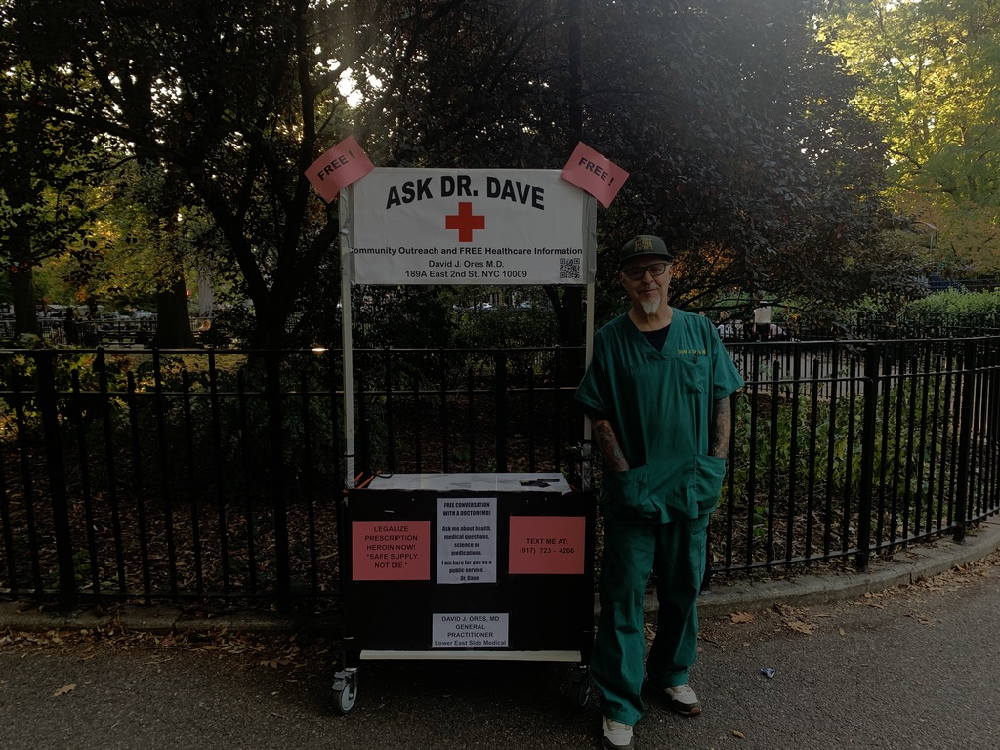

Lack of access to drug treatment in U.S. explains contrast in drug overdose deaths with Portugal

Between 2008 and 2013, the overdose death rate for every 1,000 people in the United States was higher than Portugal’s overdose death rate for every 1,000 people.
By Valerie Dowret
Nov. 22, 2024
The average United States rate for overdose deaths per 1,000 from 2008-2013 is 16. In Portugal, the rate for overdose deaths per 1,000 was 0.44 for that time.
Portugal’s universal affordable health care system and drug decriminalization is the reason for this difference, Medical Doctor David Ores said.
Portuguese drug users “can go see a doctor or a clinic or something and not pay any money so they get care before they die,” Ores explained.
Portugal decriminalized substances in 2001. Seven years later, the drug overdose death rate was down each year with the exception of 2012.
In the United States, where drug possession is a felony, between 2008 and 2013, there was a steppening incline of drug overdose deaths.
Increasing sales of fentanyl—which went up each year—sparked the American incline in deaths, Ores said. Many people who consume fentanyl die from the drug, he added.